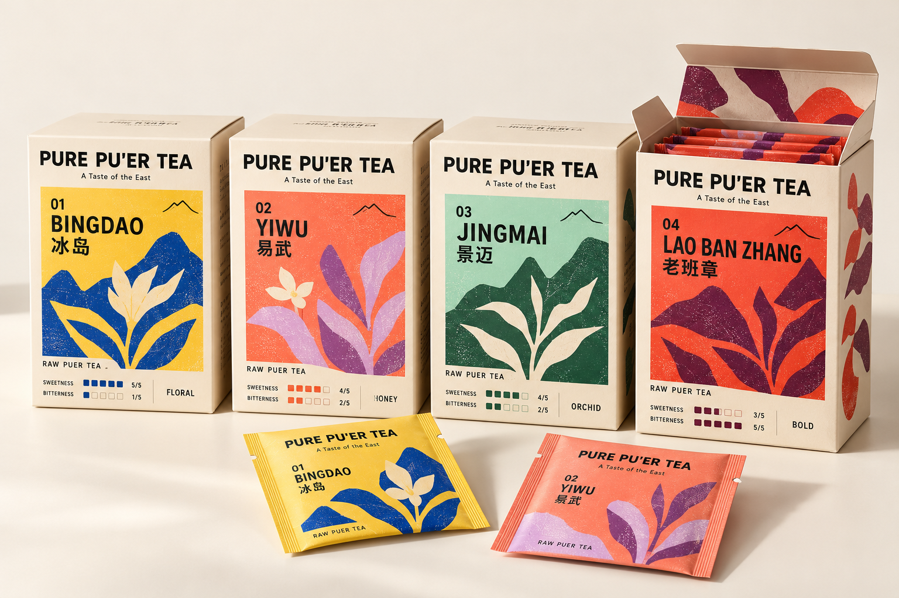
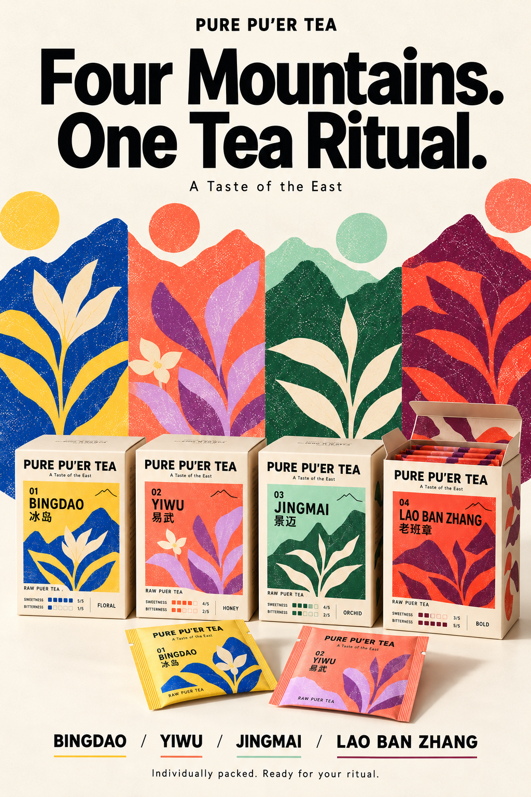

← Back to the case study
PURE PU’ER TEA
A Taste of the East
Find Your Mountain 
Four origins. Four expressions. View full-size artwork
01 BINGDAO 冰岛
Sweetness 5/5
Bitterness 1/5
Discover The reference pairs yellow and blue with mountain silhouettes and botanical forms.
The flavour descriptor and scores shown here are concept label information from the supplied reference.
02 YIWU 易武
Sweetness 4/5
Bitterness 2/5
Discover The reference pairs coral and purple with mountain silhouettes and botanical forms.
The flavour descriptor and scores shown here are concept label information from the supplied reference.
03 JINGMAI 景迈
Sweetness 4/5
Bitterness 2/5
Discover The reference pairs green and cream with mountain silhouettes and botanical forms.
The flavour descriptor and scores shown here are concept label information from the supplied reference.
04 LAO BAN ZHANG 老班章
Sweetness 3/5
Bitterness 5/5
Discover The reference pairs red and burgundy with mountain silhouettes and botanical forms.
The flavour descriptor and scores shown here are concept label information from the supplied reference.

Four Mountains. One Tea Ritual. View full-size artwork Supplied collection images are shown in full. Separate product views are not yet available. Flavour labels and ratings are reproduced from the supplied reference.